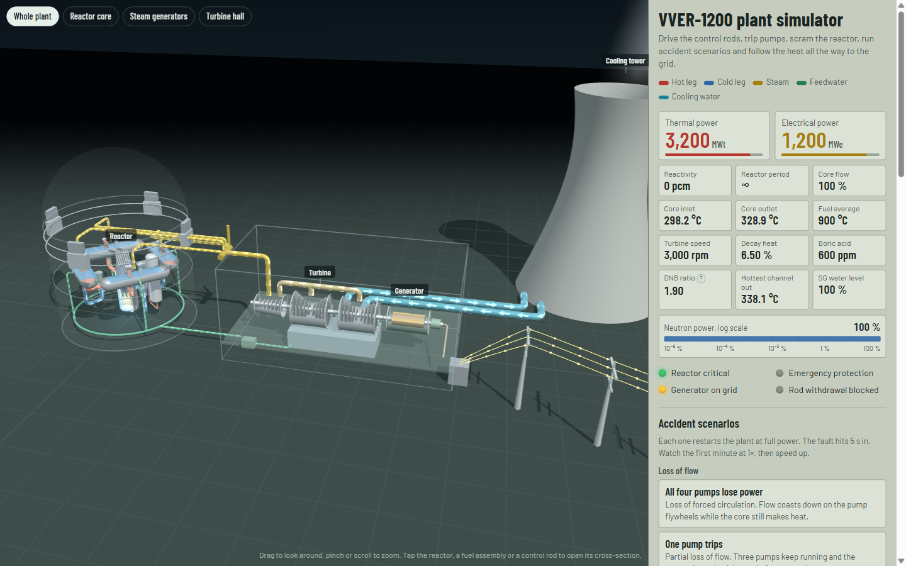

Adilet Shynggys
Mechanical and Aerospace Engineering, Nazarbayev University
I study heat transfer and two-phase flow for cleaner, safer power generation, particularly nuclear energy: how microscale surface geometry, texture, and wettability govern the supply of liquid to heated surfaces, boiling, and the boiling crisis.
- Ph.D. applicantFall 2027, mechanical or nuclear engineering
- GPA 3.86 / 4.00Ranked 1st in cohort
- Co-author, Small2026 journal article
- Presidential ScholarRepublic of Kazakhstan, 2026–27
I am a senior at Nazarbayev University in Astana, graduating in June 2027. With Prof. Amgad Salama I fabricate tapered microchannels and study how their geometry moves liquid without a pump, and I am part of a four-person capstone team designing a VVER-1200 reactor core.
Before that I spent a year in the Energy Conversion Laboratory building triboelectric nanogenerators, which led to a co-authored article in Small and a Best Research Poster award. In Spring 2026 I was a visiting exchange student in Mechanical Engineering at The University of Hong Kong.
Research
Capillary-Driven Surface Engineering
Dept. of Mechanical and Aerospace Engineering, Nazarbayev University • Advisor: Prof. Amgad Salama
- Investigating wetting phenomena and how microchannel taper geometry drives liquid with no pump: the taper creates a Laplace-pressure asymmetry that should drive wetting liquids toward the narrow end and non-wetting liquids toward the wide end.
- Designed the inverted photomask with the group and executed the full clean-room photolithography process, producing a first successful sample of tapered SU-8 microchannels on silicon.
- Planning transport experiments across taper geometries to measure droplet and slug velocity, targeting pump-free delivery of working fluid to heated components.
Senior Capstone (Engineering Design): VVER-1200 Reactor Core
Nazarbayev University • Team of four • Advisor: Prof. Amgad Salama
- Derived 3,200 MWth of core thermal power from the required electrical output via cycle efficiency, and sized fuel pellets, rods, and bundles into a hexagonal core configuration from a target burnup near 50 GWd/tHM.
- Initiating thermal-hydraulic analysis: coolant flow and temperature rise, critical heat flux, and margins to subcooled boiling and departure from nucleate boiling (DNB), feeding a reduced-order model to be validated against published reference data.
Interactive VVER-1200 Plant Simulator
Teaching model, built separately from the capstone
A browser-based 3D model of a VVER-1200 plant. Move the control rods, change boric acid, trip coolant pumps or scram the reactor, and follow the heat from the core through the steam generators and turbine to the grid. It uses six-group point kinetics with Doppler and moderator feedback, decay heat, and the reactor protection logic. It is a teaching model, not a plant-analysis code.

Triboelectric Nanogenerators for Wearable Sensing
Energy Conversion Laboratory, Nazarbayev University • Supervisor: Dr. Shabnam Yavari
- Fabricated triboelectric nanogenerators with the group by electrospinning and silicone casting, raising output power density by 15–20%.
- Characterized devices across humidity and cyclic durability, and built the electrical workflow behind the tests: load sweeps, data acquisition, and analysis in OriginPro and MATLAB.
- Co-authored an article in Small and presented a first-author conference poster.
Publications and Presentations
-
S. Faramarzi, S. Yavari, U. Ospanova, A. Shynggys, et al., “Polarity-Engineered, Tribo-Positive Imidazolium-Mediated Crosslinked 6FDA-Durene Films for Triboelectric Nanogenerator,” Small, vol. 22, no. 50, e74486, 2026.
-
A. Shynggys, S. Yavari, G. Kalimuldina, “Green-Synthesized Ag Nanoparticles Incorporated into High-Performance Triboelectric Wearable Sensors.” Poster, Belt and Road Initiative Conference, Astana, 2025; abstract, INESS-2025, Astana, Aug. 2025.
Education
B.Eng., Mechanical and Aerospace Engineering
Nazarbayev University • Astana, Kazakhstan
- GPA 3.86 / 4.00; ranked 1st in cohort; Dean's List, four consecutive semesters.
- Coursework: Engineering Thermodynamics, Fluid Mechanics, Heat and Mass Transfer (in progress), Structural Mechanics, Materials and Manufacturing, Numerical Methods, Engineering Dynamics I–II, Introduction to Aerospace Propulsion (in progress).
Visiting Exchange Student, Mechanical Engineering
The University of Hong Kong • Hong Kong SAR
- Completed Energy Conversion Systems, Design and Manufacture, and Additive Manufacturing; co-developed the curriculum for an undergraduate course with Prof. Wei Yan.
Awards and Honors
- 2026–27Presidential Scholarship of the Republic of Kazakhstan
- 2026–27Yessenov Foundation Scholarship, 20 of 500+ applicants
- 2025Best Research Poster, Belt and Road Initiative Conference
- 20251st Place, Mechaton Engineering Case Competition
- 2024–25NU President's Scholarship
Industry and Design
Product Support Engineering Intern
Wabtec Corporation, Kazakhstan • awarded as the Mechaton 1st-place prize
- Tested traction-motor thermal performance as part of a root-cause review of temperature excursions.
- Updated technical drawings to match shop-floor production, reconciling GOST with ASME, and traced an insulation inconsistency to different export-market climates.
Design Projects at The University of Hong Kong
- Multi-stage gearbox: sized shafts by the ASME bending–torsion criterion and selected gears, keyways, and bearings for the required fatigue life.
- Interactive art installation (with Prof. Homayoon Kazerooni, UC Berkeley): modeled petal forms in SolidWorks, verified collision clearance and stability, and 3D-printed each piece.
Teaching, Leadership, and Service
Elected Undergraduate Representative
Student Advisory Body, School of Engineering, Nazarbayev University
- Compile and organize student concerns across the major and advise the Dean and Vice Dean on recommendations; one of two representatives elected for the major (one undergraduate, one graduate).
Cohort Representative, Mechanical and Aerospace Engineering
Nazarbayev University
- Organized and directed 10+ exam-preparation nights for the cohort.
- Presented student requests to the dean, securing a rescheduled exam and expanded exchange opportunities.
Physics Tutor (volunteer)
Nazarbayev University
Tutored 20+ first-year students.
Community Service
- Secured sponsors for a charity trail run supporting MamaPro, a nonprofit providing business education to single mothers: 150 runners, 600,000 KZT (~$1,300) raised.
- Volunteered with the Mereke Charity Foundation (retirement-home visits, winter clothing drive for children from vulnerable families) and organized iftars with the HKU Muslim Society during Ramadan.
Skills
- Computing
- MATLAB, Python, Mathematica, OriginPro, LaTeX
- CAD
- SolidWorks (CSWA certified)
- Lab
- Photolithography, electrospinning, silicone casting, 3D printing, device characterization
- Languages
- Kazakh (native), Russian (fluent), English (IELTS 8.0)
References
Contact information available upon request.
- Research advisorProf. Amgad Salama, Nazarbayev University
- Research supervisorDr. Shabnam Yavari, Nazarbayev University
- ExchangeProf. Wei Yan, The University of Hong Kong
- ExchangeProf. Homayoon Kazerooni, UC Berkeley / The University of Hong Kong
Contact
I am applying for Ph.D. positions starting Fall 2027 and would be glad to talk about boiling, two-phase flow, and reactor thermal-hydraulics.